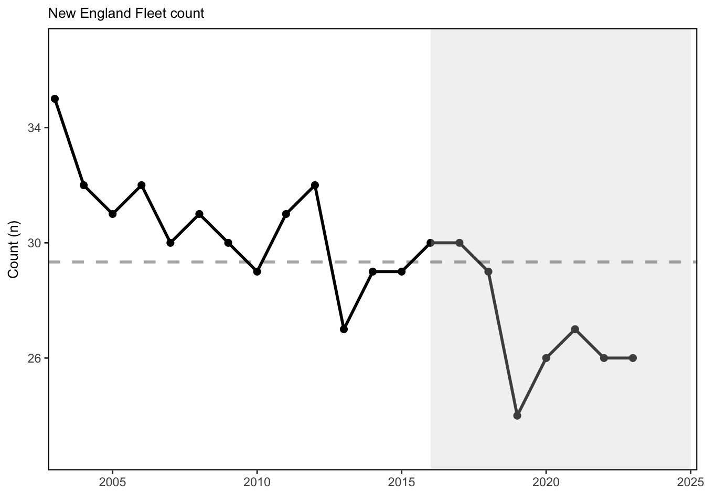

SMART Indicator Report: Commercial Catch and Fleet Diversity
2 Indicator name
Commercial Catch and Fleet Diversity
Includes variable(s): Fleet count, Fleet diversity in revenue, Permit revenue species diversity
4 Indicator visualization
Diversity estimates have been developed for species landed by commercial vessels with New England permits, and fleets landing managed species. Over the course of the last three years, there has been a steep decline in the effective number of species being landed in the commercial fleet, and current diversity is near a low since records began. Commercial fishery fleet count has rebounded in recent years, although still at levels well below the historical average. Here a fleet is defined as the combination of gear type (Scallop Dredge, Clam Dredge, Other Dredge, Gillnet, Hand Gear, Longline, Bottom Trawl, Midwater Trawl, Pot, or Purse Seine) and vessel length category (Less than 30 ft, 30 to 50 ft, 50 to 75 feet, 75 ft and above). Commercial fishery fleet count and fleet diversity have been stable over time in the MAB, with current values near the long-term average. This indicates similar commercial fleet composition and species targeting opportunities over time. Commercial fisheries are relying on fewer species relative to the mid-90s, although current species revenue diversity has recovered somewhat in the last year.

5 Indicator documentation
5.1 Are indicators available for others to use (data downloadable)?
Yes
5.1.1 Where can indicators be found?
Data: https://noaa-edab.github.io/ecodata/index.html
Description: https://noaa-edab.github.io/catalog/commercial_div.html
Technical documentation: https://noaa-edab.github.io/tech-doc/commercial_div.html
5.1.2 How often are they updated? Are future updates likely?
[need sequential look at datasets for update frequency. Future requires judgement]
5.1.3 Who is the contact?
Geret DePiper (geret.depiper@noaa.gov)
5.2 Gather indicator statistics
5.2.1 Units
Indicator | Units |
|---|---|
Fleet count | number of fleets |
Fleet diversity in revenue | effective Shannon |
Permit revenue species diversity | effective Shannon |
5.2.2 Length of time series, start and end date, periodicity
General overview: Annual
Indicator specifics:
Indicator | EPU | StartYear | EndYear | NumYears | MissingYears |
|---|---|---|---|---|---|
Fleet count | MA | 2003 | 2023 | 21 | 0 |
Fleet count | NE | 2003 | 2023 | 21 | 0 |
Fleet diversity in revenue | MA | 2003 | 2023 | 21 | 0 |
Fleet diversity in revenue | NE | 2003 | 2023 | 21 | 0 |
Permit revenue species diversity | MA | 2003 | 2023 | 21 | 0 |
Permit revenue species diversity | NE | 2003 | 2023 | 21 | 0 |
5.2.3 Spatial location, scale and extent
General overview: MA and NE
Indicator specifics:
Indicator | EPU |
|---|---|
Fleet count | MA |
Fleet count | NE |
Fleet diversity in revenue | MA |
Fleet diversity in revenue | NE |
Permit revenue species diversity | MA |
Permit revenue species diversity | NE |
5.3 Are methods clearly documented to obtain source data and calculate indicators?
Yes
5.3.1 Can the indicator be calculated from current documentation?
The following describes both the permit-level species and fleet diversity data generation. Price data was extracted from the Commercial Fishery Dealer database (CFDERS) and linked to Vessel Trip Reports by a heirarchical matching algorithm that matched date and port of landing at its highest resolution. Code used in these analyses is available upon request. Output data was then matched to vessel characteristics from the VPS VESSEL data set. For the permit-level estimate, species groups are based off of a slightly refined NESPP3 code (Table 57.1), defined in the data as “myspp”, which is further developed in the script to rectify inconsistencies in the data. For the fleet diversity metric, gears include scallop dredge (gearcodes DRS, DSC, DTC, and DTS), other dredges (gearcodes DRM, DRO, and DRU), gillnet (gearcodes GND, GNT, GNO, GNR, and GNS), hand (gearcode HND), longline (gearcodes LLB and LLP), bottom trawl (gearcodes OTB, OTF, OTO, OTC. OTS, OHS, OTR, OTT, and PTB), midwater trawls (gearcode OTM and PTM), pot (gearcodes PTL, PTW, PTC, PTE, PTF, PTH, PTL, PTO, PTS, and PTX), purse seine (gearcode PUR), and hydraulic clam dredge (gearcode DRC).Vessels were further grouped by length categories of less than 30 feet, 30 to 50 feet, 50 to 75 feet, and 75 feet and above. All revenue was deflated to real dollars using the “WPU0223” Producer Price Index with a base of January 2015. Stata code for data processing is available here.
This permit-level species effective Shannon index is calculated as \[exp(-\sum_{i=1}^{N}p_{ijt}ln(p_{ijt}))\] for all \(j\), with \(p_{ijt}\) representing the proportion of revenue generated by species or species group \(i\) for permit \(j\) in year \(t\), and is a composite of richness (the number of species landed) and abundance (the revenue generated from each species). The annual arithmetic mean value of the effective Shannon index across permits is used as the indicator of permit-level species diversity. In a similar manner, the fleet diversity metric is estimated as \[exp(-\sum_{i=1}^{N}p_{kt}ln(p_{kt})) \] for all \(k\), where \(p_{kt}\) represents the proportion of total revenue generated by fleet segment \(k\) (gear and length combination) per year \(t\). The indices each run from 1996 to 2017. A count of the number of fleets active in every year is also provided to assess whether changes in fleet diversity are caused by shifts in abundance (number of fleets), or evenness (concentration of revenue). The work is based off of analysis conducted in Thunberg and Correia (2015) and published in Gaichas et al. (2016).
5.4 Are indicator underlying source data linked or easy to find?
Source data is not publicly availabe due to PII restrictions. Derived time series are available for download here.
5.4.1 Where are source data stored?
Data for these diversity estimates comes from a variety of sources, including the Commercial Fishery Dealer Database, Vessel Trip Reports, Clam logbooks, vessel characteristics from Permit database, WPU series producer price index. These data are typically not available to the public.
5.4.2 How/by whom are source data updated? Are future updates likely?
Geret DePiper, geret.depiper@noaa.gov
[likelihood of source data updates requires judgement, enter by hand]
6 Indicator analysis/testing or history of use
6.1 What decision or advice processes are the indicators currently used in?
Diversity estimates have been developed to understand whether specialization, or alternatively stovepiping, is occurring in fisheries of the Northeastern Large Marine Ecosystem. We use the average effective Shannon indices for species revenue at the permit level, for all permits landing any amount of NEFMC or MAFMC Fishery Management Plan (FMP) species within a year (including both Monkfish and Spiny Dogfish). We also use the effective Shannon index of fleet revenue diversity and count of active fleets to assess the extent to which the distribution of fishing changes across fleet segments.
6.2 What implications of the indicators are currently listed?
Fleet diversity indices can be used to evaluate stability objectives as well as risks to fishery resilience and to maintaining equity in access to fishery resources [115]. In New England, the relatively low diversity estimates for the commercial fishery are likely driven by the continued reliance on a few species, sea scallops and lobster. This trend could diminish the capacity to respond to future fishing opportunities. In the Mid-Atlantic, stability in commercial fleet diversity metrics suggests stable capacity to respond to the current range of fishing opportunities.
6.3 Do target, limit, or threshold values already exist for the indicator?
[Fill by hand; if not in key results or implications, likely does not exist]
6.4 Have the indicators been tested to ensure they respond proportionally to a change in the underlying process?
[Fill by hand; if not in introduction, key results, or implications, likely not tested]
7 Comments
[Fill below by hand once above data complete]
7.1 Additional potential links to management in addition to uses listed above
7.2 What additional work would be needed for the Council to use the indicator?
7.3 What issues are caused if there is a gap or delay in data underlying the indicator